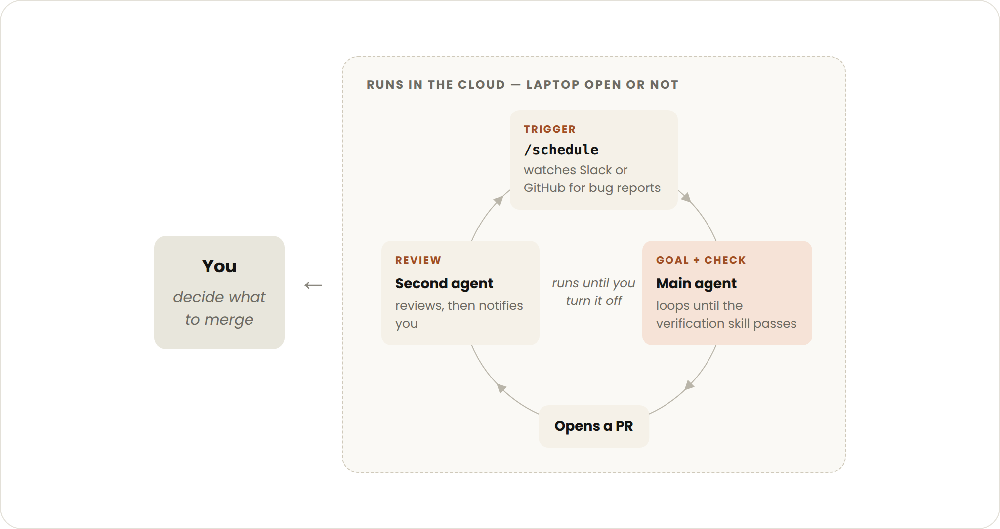
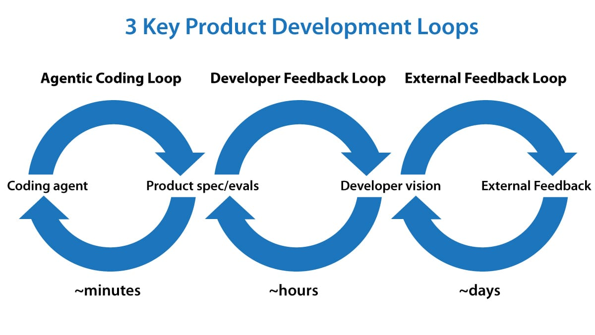

§0Executive Summary
五段话读懂两篇文章的核心洞见
Loop engineering 正在取代 prompt engineering，成为 AI 编码时代的核心能力。在 Boris Cherny（Claude Code 创造者）与 Peter Steinberger（OpenClaw 创造者）的讨论在社交媒体走红之后，"设计 loop 而不是写 prompt"已经成为 2026 年 AI 编码社区最热的议题。两篇几乎同时发布的权威文章——Anthropic Claude Code 团队的《Getting started with loops》和 Andrew Ng 的《Three Key Loops for Building Great Software》——从工具与产品两个层面，给出了这一概念目前最清晰的定义。
Anthropic 给出的是"工具原语"视角。Claude Code 团队将 loop 定义为「agent 重复工作循环，直到满足停止条件（stop condition）」，并按触发方式、停止方式、所用原语和适用任务，划分出四类 loop：turn-based（逐轮手动）、goal-based（/goal 定义完成标准）、time-based（/loop 与 /schedule 定时触发）和 proactive（多原语组合的长时程主动循环）。这是一套自底向上的、可以直接上手的工程分类法。
Andrew Ng 给出的是"时间尺度"视角。他把 0-to-1 产品开发拆成三个嵌套 loop：agentic coding loop（分钟级，AI 写代码并自测）、developer feedback loop（数十分钟到小时级，开发者审视产品并修正 spec）、external feedback loop（天到周级，真实用户反馈反哺产品愿景）。这是一套自顶向下的、指导"该造什么"的产品方法论。
两个视角在关键判断上高度一致：可验证性决定 loop 的自主程度。Anthropic 强调把验证编码为 SKILL.md、用确定性指标（测试通过数、Lighthouse 分数）而非 "vibes" 定义完成；Ng 则指出正是"agent 能自测代码"这一步的成熟，让开发者从 QA 角色中解放出来，转向更高层的产品决策。同时两者都保留了人的位置：Ng 用 context advantage（而非模糊的"品味"）解释为什么 developer feedback loop 无法被自动化——只要人类知道 AI 不知道的用户与场景信息，human-in-the-loop 就是必需的。
合起来看，这是一次分工结构的重排：Anthropic 的四种原语是 Ng 三个 loop 中最内层（agentic loop）的实现工具；而 Ng 的外两层 loop 定义了这些工具应该被谁、以什么节奏驱动。开发者的工作正在从"逐轮指挥 AI 写代码"升级为"设计一个多层 loop 系统，并把自己的 context advantage 注入其中"。
§1Anthropic 视角：四种 Loop 原语
来源：claude.com/blog/getting-started-with-loops · Claude Code 团队
Claude Code 团队的定义非常收敛：loop = agent 重复工作循环，直到满足停止条件。分类依据是四个维度——如何触发、如何停止、用什么 Claude Code 原语、适合什么任务。团队同时给出一条重要的克制原则：并非所有任务都需要复杂 loop，从最简单的方案开始，按需引入这些模式。
Turn-based loop：每个 prompt 都是一次手动循环

你发出的每个 prompt 都会启动一次由你指挥的手动循环：Claude 收集上下文 → 采取行动 → 检查自己的工作 → 必要时重复 → 返回结果。这就是最基础的 agentic loop。比如让 Claude 做一个点赞按钮：它读代码、改代码、跑测试，交回一个它认为能工作的结果，然后由你人工检查、写下一个 prompt。
升级点在验证环节：把你的人工检查步骤编码为 SKILL.md，让 Claude 端到端地自查——启动 dev server、在浏览器里实际点按控件、截图前后对比、检查 console 零报错、用 Chrome DevTools MCP 跑性能 trace 与 Core Web Vitals 审计。检查越是量化，agent 越容易自我验证。
Goal-based loop（/goal）：用完成标准替代"感觉够好了"

复杂任务往往一轮做不完，agent 需要持续迭代。/goal 让你显式定义"什么叫完成"：Claude 每次试图停下时，一个 evaluator model 会检查你的条件，不满足就把它送回去继续干，直到达成目标或用尽你设定的轮数上限。这样 Claude 不必自己判断"够好了没"而提前退出循环。
确定性标准（通过的测试数量、达到某个分数阈值）在这里格外有效：
/goal get the homepage Lighthouse score to 90 or above, stop after 5 tries.Time-based loop（/loop 与 /schedule）：让时间成为触发器
有些 agentic 工作是周期性的——任务不变、只有输入在变（比如每天早上总结 Slack 消息）；有些工作依赖外部系统，最简单的接口方式就是按间隔轮询并对变化做出反应（比如 PR 可能收到 review 或 CI 失败）。
/loop 5m check my PR, address review comments, and fix failing CI/loop 在本机运行，关机即停；用 /schedule 创建 routine 可以把循环搬到云端持续执行。这条本地/云端的分界，是设计长期运行任务时的关键取舍。
Proactive loop：把原语组合成长时程的主动系统

把上述原语与 auto mode、dynamic workflows（research preview）组合，就得到面向长时程工作的主动循环。以"处理进入的用户反馈"为例：用 /schedule 定时检查新消息，用 /goal 定义 triage 的完成标准，再用 workflow 在并行 worktree 里同时探索多个解法并由 judge 对抗性评审：
/schedule every hour: check #project-feedback for bug reports.
/goal: don't stop until every report found this run is triaged,
actioned, and responded to. When fixing a bug, use a workflow
to explore three solutions in parallel worktrees and have a
judge adversarially review them.质量与成本：loop 的两条工程红线
维护代码质量
- 单个结果不达标时，不要止步于修复个案，把教训编码进系统，改善所有后续迭代
- 把验证内建到 loop 里（SKILL.md），不要依赖循环结束后的人工 review
- 状态外置（数据库、文件、PR），让工作可恢复、可审计
控制 token 消耗
- 设置显式停止条件：轮数、时间、确定性 goal
/goal用可度量标准，not vibes- 为任务匹配合适的 model 与 effort level——这是 loop 成本最大的杠杆
- 状态还在时用 resume session，别每次从零开始
§2Andrew Ng 视角：三个时间尺度的产品 Loop
来源：The Batch #359（deeplearning.ai）· Letters from Andrew Ng

Ng 的出发点不是工具，而是 0-to-1 产品开发的决策结构：这三个 loop 不仅指导他怎么造软件，还指导他决定造什么软件。三者的区分维度是时间尺度（timescale）与行动主体（who acts）。
Agentic coding loop：AI 自己写、自己测、自己迭代
给定产品 spec（可选地加上一组 evals 作为度量数据集），AI agent 可以写代码、测试、持续迭代，直到代码无 bug 且满足 spec。"closing the loop" 这个思路在去年年底爆发，成为让 coding agent 长时间无人干预地高效工作的 game changer。Ng 举了自己的例子：周末给女儿做打字练习 app，coding agent 可以独立工作约一小时，期间多次用浏览器检查自己构建的东西，完全不需要他介入。这个循环每隔几分钟就能构建并测试一个新版本——这也是当下发明最活跃的领域。
Developer feedback loop：人类的 context advantage 不可自动化
开发者审视当前产品，引导 agent 改进它。去年很多开发者（包括 Ng 自己）实际在给 coding agent 当 QA——手动找 bug 再让 agent 修；如今 agent 自测能力大幅提升，这部分时间显著减少，开发者得以转向更高层的产品决策：提供哪些关键功能、UI 哪里需要改进、用户流程怎么设计。（打字 app 的例子里：视觉设计改了几版、女儿能解锁哪些猫咪装扮、家长登录引导学习的流程。）如果系统反复踩同一类坑，就该为 agent 建一组 evals。
最关键的论断：Ng 认为人类相对 AI 拥有显著的 context advantage——我们对用户和产品运行的场景知道得比 AI 多得多。很多人把这种人类贡献叫"taste（品味）"，但 Ng 更愿意称之为 context advantage，因为它指出了帮助 AI 变强的清晰路径，也解释了这一步为何不能自动化：只要人类知道 AI 不知道的东西，就需要 human-in-the-loop 把这些知识注入系统。
External feedback loop：真实世界反哺产品愿景
手段很多——找几个朋友要反馈、发给 alpha 测试者、上生产做 A/B testing。这些手段很慢，很少快于小时级，常常需要几天甚至数周。但这些数据 inform 开发者的 vision，vision 驱动详细的产品 spec，spec 再驱动 coding agent——三个 loop 由此串成一条链。
随着 coding agent 加速开发，更多工程师开始承担部分产品经理的角色。对成长中的工程师来说，最难的是塑造产品愿景，并在 building（弥合 vision 与 spec 的差距）和 getting user feedback（用反馈演化 vision）之间取得平衡——两者都不可偏废。
| Loop | 时间尺度 | 行动主体 | 目的 |
|---|---|---|---|
| Agentic coding loop | 分钟 | AI | 写 → 测 → 迭代，直到满足 spec |
| Developer feedback loop | 数十分钟～小时 | 人类开发者 | 用 vision + spec 引导 agent |
| External feedback loop | 天～周 | 真实用户 | 反馈 → vision → spec → agent |
§3对照与综合：两套分类，一个体系
工具原语 × 时间尺度：为什么它们是互补而非竞争
| 维度 | Anthropic（Claude Code 团队） | Andrew Ng |
|---|---|---|
| 切入角度 | 自底向上：工具原语与执行机制 | 自顶向下：产品决策与时间尺度 |
| Loop 的定义 | agent 重复工作循环，直到满足 stop condition | 不同 timescale 上运转的迭代反馈回路 |
| 分类依据 | 触发方式 / 停止方式 / 所用原语 / 适用任务 | 时间尺度（分钟 / 小时 / 天）× 行动主体（AI / 开发者 / 用户） |
| 类别数 | 4：turn-based / goal-based / time-based / proactive | 3：agentic coding / developer feedback / external feedback |
| 核心机制 | SKILL.md 验证、/goal evaluator、/loop / /schedule、workflows | spec + evals 驱动 agent；反馈数据驱动 vision |
| 人的角色 | 设计 stop condition 与验证系统，从逐轮指挥中退出 | 凭 context advantage 做产品决策，human-in-the-loop 不可替代 |
| 质量抓手 | 确定性标准、not vibes；验证内建、状态外置 | 反复出现的问题 → 沉淀为 evals |
| 对应关系 | Anthropic 的四种原语 ≈ Ng 的 Loop 1 内部实现；/schedule + proactive loop 让 agent 能持续对接 Ng 的 Loop 2/3 产生的反馈流 | |
为什么这是 2026 年 AI 编码的范式转变
第一，工作单元从"一次回答"变成"一个会自我终止的过程"。Prompt engineering 优化的是单次输入-输出的质量；loop engineering 优化的是一个带触发器、验证器和停止条件的系统。开发者投入产出的杠杆点从"措辞"迁移到"stop condition 与验证的设计"。
第二，验证从人工后置变为机器内建。两篇文章共同的转折点是 agent 学会了检查自己的工作——Anthropic 用 SKILL.md、evaluator model 和确定性指标把验证机制化；Ng 观察到的直接后果是开发者从 QA 中解放，转去做只有人类能做的事。可验证性成了 loop 自主程度的上限。
第三，人的价值被重新命名和定位。Ng 用 context advantage 取代 "taste"，把人类贡献从玄学变成工程问题：人类之所以必需，是因为掌握 AI 缺失的信息；而这也给出了改进方向——把这些信息（用户画像、场景约束、历史踩坑）持续注入系统：写进 spec、沉淀为 evals、编码为 skills。
第四，角色边界在双向融合。工程师承担部分产品经理职责（Ng），同时把过去人工执行的检查与流程沉淀为可复用的自动化资产（Anthropic）。2026 年的"高级开发者"，本质上是一个 multi-loop 系统的架构师与运营者。
一句话综合：Anthropic 回答"loop 怎么造"（how），Andrew Ng 回答"loop 为谁转、以什么节奏转"（why & when）。把四种原语装进三层时间尺度里，就得到一张完整的 loop engineering 地图。
§4行动建议：从 turn-based prompt 到 multi-loop 系统
给开发者与团队的分阶段实操路线
阶段 0：找到起点
照 Claude Code 团队的建议自问：审视你已经在做的工作，挑一个你自己是瓶颈的任务——你能把验证步骤写出来吗？目标够清晰吗？这个工作是否按固定节奏到来？三个问题分别指向 SKILL.md、/goal 和 /loop / /schedule。
阶段 1：强化 turn-based loop 的验证环节
- 把你每次人工检查的动作（跑测试、开浏览器点一遍、看 console、量性能）写成
SKILL.md，让 agent 端到端自查 - 优先使用量化检查：测试通过数、零 console error、Core Web Vitals 阈值
- 给 agent 配上"看见结果"的工具：浏览器、DevTools MCP、截图对比
阶段 2：用 /goal 延长迭代，用确定性标准定义完成
- 把"改到我满意为止"翻译成可判定条件：
Lighthouse ≥ 90、全部测试通过、覆盖率 ≥ 80% - 永远附带熔断：轮数或时间上限（如
stop after 5 tries），控制 token 成本 - 为任务选对 model 与 effort level——这是成本最大的杠杆
阶段 3：把周期性工作交给 /loop 与 /schedule
- 盘点"任务不变、输入在变"的例行事务：PR 巡检、CI 修复、日报汇总、反馈 triage
- 本机试跑用
/loop，验证稳定后用/schedule上云持久化 - 状态外置到 PR / 文件 / 数据库，保证可恢复、可审计
阶段 4：组合成 proactive 系统，并接入外层 loop
- 组合原语：
/schedule（触发）+/goal（完成标准）+ workflow（并行探索 + judge 对抗评审） - 对齐 Ng 的三层结构：让 agentic loop 消化 developer feedback loop 与 external feedback loop 产出的信息流（用户反馈频道、A/B 数据、alpha 测试报告）
- 反复出现的同类问题 → 沉淀为 evals，成为内层 loop 的固定验证资产
阶段 5：经营你的 context advantage（团队层面）
- 把只有你/团队知道的用户与场景知识持续文档化：写进 spec、CLAUDE.md、SKILL.md、evals——每一条注入的知识都在缩小 AI 的信息差、放大 loop 的自主上限
- 刻意平衡 building 与 getting user feedback：不要因为内层 loop 太快太爽，就忘了让外层 loop 转起来
- 监控并迭代 loop 本身而不只是单次产出：观察它在哪里卡壳（stall）、在哪里越界（over-reach），像改代码一样改 loop
最小起步建议：本周就挑一个你重复做过三次以上的检查动作，写成第一个 SKILL.md；下周给一个明确可量化的任务套上第一个 /goal。multi-loop 系统不是设计出来的，是从一个能自我验证的小循环长出来的。